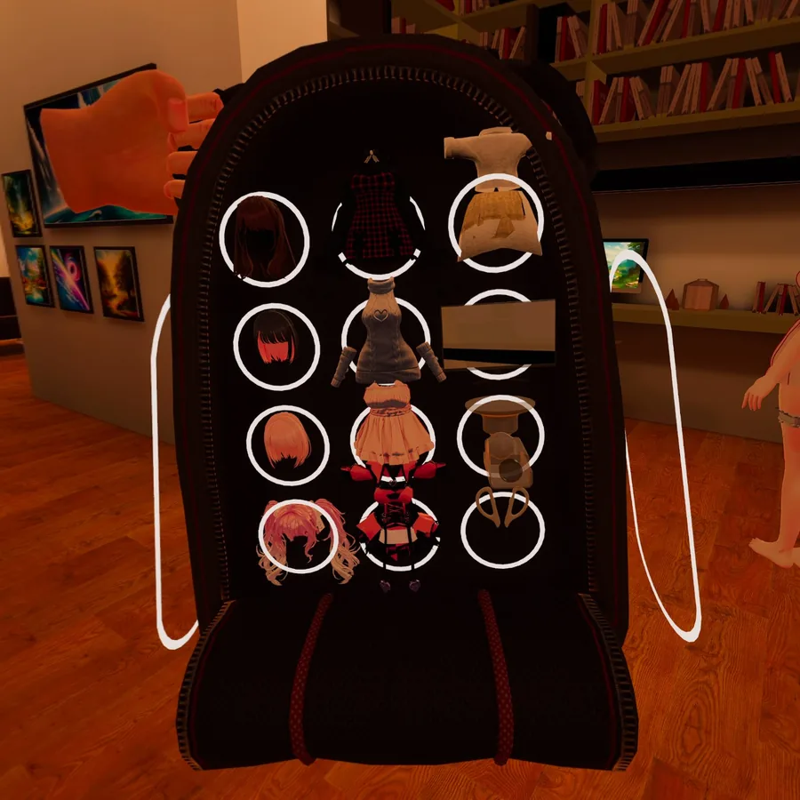

01
導入ガイド
インストール、アップデート方法を解説しています。まずはこちらをご確認ください。
ガイドを開く
01
導入ガイド
インストール、アップデート方法を解説しています。まずはこちらをご確認ください。
ガイドを開く

02 プレイガイド ゲームの操作方法とシステムを解説しています。このガイドを読むとより楽しく遊べます。 ガイドを開く 03
トラブルガイド
よくある問題と解決方法について解説しています。
ガイドを開く
03
トラブルガイド
よくある問題と解決方法について解説しています。
ガイドを開く
Requirements
対応機種・動作要件
PCVR版
- 対応OS
- Windows 10/11
- 必須
- SteamVR
- GPU
- RTX3060以上推奨
- メモリ
- 16GB以上推奨
- 対応機種
- Meta Quest 2/Pro/3/3S (SteamVR)
PICO Neo 3/4/4Ultra (SteamVR)
HTC VIVE シリーズ
その他SteamVR対応機種
Quest単体版
- 導入
- Quest本体のファイルアプリ または SideQuest
- 対応機種
- Meta Quest 2
Meta Quest Pro
Meta Quest 3
Meta Quest 3S
News
お知らせ
過去のお知らせ
導入ガイドを更新しました。
ミスター秘密侵入VRを販売開始しました！
マニュアルサイトを公開しました。
Ver 1.0.0をリリースしました。